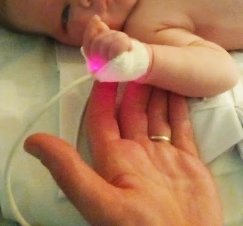

El Tao de ser padre
Del mismo modo que el Tao que se puede explicar no es el verdadero Tao, lo que se puede contar de ser padre no es la verdad de ser padre. Pero se parece a todas esos trenes en los que se monta para ya nunca bajar. No hay vuelta atrás, no hay paradas, volante ni freno ni noches en las que se detenga el viaje. Frente a su apariencia inocente y a las historias que se narran a los no iniciados como cuentos para niños, aun no siendo una aventura glamurosa, quizá sea la aventura de mi vida. Como canta la canción, "you reached the secret too soon", en esa letra de Pink Floyd que pide brillar en tu diamante loco. No hay iniciación sin asomo a la locura, y qué mejor puerta a la locura que la que no tiene vuelta atrás una vez se traspasa. Por eso yo antes no entendía nada, y creí que nunca haría lo que me prometí no repetir jamás porque vi en ello el triste hilo conductor de las grandes novelas que repiten los patrones inevitables del hombre. Y mi propia infancia no era una excepción. No es justo el desequilibrio entre un padre y su hijo, porque uno posee la fuerza que brinda haber sobrevivido a los acumulados golpes de la vida, mientras que el otro posee toda la inocencia de quien aún cree con todo su corazón que los demás lo quieren sin límites cada minuto, como él mismo ama. Es injusto este desequilibrio de poder, pero todo desequilibrio camina hacia su disolución. Toda ira es sólo negación de la realidad, la pataleta de quien no acepta lo que innegablemente es, la derrota ante lo que queremos cambiar sin saber cómo. Por eso ahora veo que vencer mi ira ha sido la llave que ha abierto las puertas al puñado de cosas buenas que he encontrado. Si algo he aprendido es que para vencer hay primero que rendirse. Y esta es la más dulce de las derrotas, la derrota frente a un hijo. La que resulta victoria porque a partir de entonces vale más lo bueno que le pasa a alguien que no soy yo. Ese es el verdadero camino hacia adelante que trasciende al hombre, pues negándose a sí mismo en beneficio de otro, rompe su límite para extender lo que es y alcanzar con su amor lo que está más allá, lo que llega más lejos en el tiempo y que ahora es más yo que yo mismo. Y eso me lo ha enseñado mi hija Helena.
“El primer trago de ciencia te convierte en ateo, pero al fondo del vaso te espera Dios”. Siento que Heisenberg me lo ha explicado así mejor que nadie. Aspirando a ser hombre de ciencia y dueño de mi destino, abrazo también el desprecio de Nietzsche por las religiones de pastores y rebaños. También he rechazado el misterio y la incapacidad de la mente para desenvolver la fábrica secreta en que se teje la realidad. Sin embargo, estas aspiraciones mías nunca han perdido ese velo de duda y las paradojas en la consistencia han ido revelando para mi esa sospecha de que todo esto puede ser no más que un decorado, o la historia más increíble jamás contada. Y que quizás yo no sea solo el protagonista sino también el autor. Y, más recientemente, me he convencido de que hay una paradoja en el centro. Del mismo modo que un fotón se comporta como onda o partícula, en mí se despliega la consciencia o la mente, una cuando se va la otra. En un lado vive la mente, la cara concreta y tangible, la que está aquí y no allí, la que colisiona con el entorno, la que penetra con su intelecto los puzzles y despedaza la realidad en ideas como bloques de lego. Pero cuando la mente desaparece brilla la consciencia, la experiencia autorreferencial de ser y estar, al margen de la sucesión de instantes, aquí y allá y en ningún lugar. En vez de colisionar, la consciencia inunda, abarca, interfiere y se entrelaza como una onda con las demás. Si, como narra el Bhagavad Gita, la mente es el destructor de la realidad, entonces la consciencia es la que de los pedazos conforma un todo. Su conocimiento es inmediato, autoevidente, más allá de las palabras. Al cesar la mente su actividad, la consciencia se asemeja a una antena que recibe las innumerables transmisiones que traen los ecos incesantes de todos los rincones de la realidad. Ya tome los nombres de intuición, clarividencia, inspiración o comunión espiritual, alma o espíritu, en la evidencia inmediata no tiene sentido la duda. Y en la oscura noche en que Alejandra y yo nos conocimos, y que no olvidaremos nunca, frente a un bebe cuyo pensamiento es sin forma y sus ojos no saben qué son otros ojos, uno a cada lado de la aquella máquina, de la mano nos miramos, en silencio nos dijimos todo. Y esa fe, con su ilimitada luz, que ya no deja sitio para la duda, es el maravilloso regalo que tengo de mi hija Alejandra.
Estas lecciones me han dado estas dos pequeñas mías, y solo estoy recién matriculado en su escuela. Yo sé que, aunque se esconda, esto es el fruto de mi mujer y nuestro amor, que sigue vivo cada día a fuerza de no rendirse. Ni siquiera en las batallas más retorcidas y crueles, que son las que no se luchan contra extranjeros.
Yo siempre rechacé sentir haber pecado, y más aún que preceda a mi nacimiento. Pero he ido comprendiendo que el único mal se hace solo por ignorancia, que el desconocimiento es el verdadero pecado. También entiendo lo infinito de lo que queda por aprender y que a esta vida venimos a entrenar, a lavar ese pecado que es el aún no saber todo lo que puede ser. Que en este día, este agua deje ver la luz que guíe a Alejandra en su recién comenzado caminar.
León, 2 de Marzo de 2024.
https://delightfulobservaciones.blogspot.com/2019/06/poco-antes-de-helena.htmlhttps://delightfulobservaciones.blogspot.com/2023/10/poco-antes-de-alejandra.html
